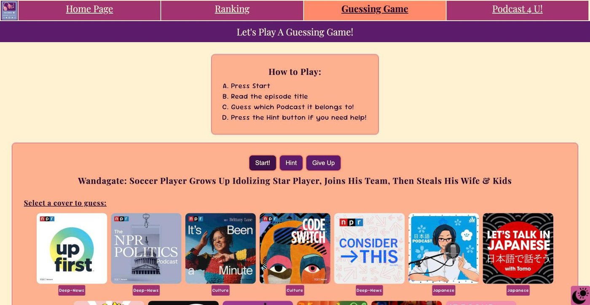
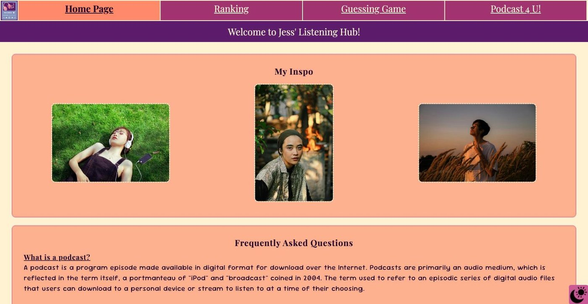
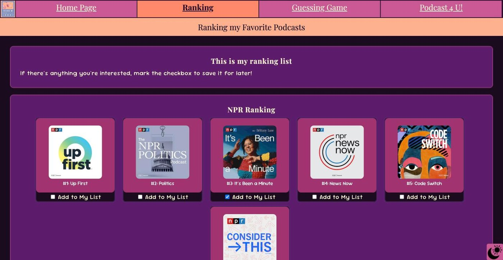
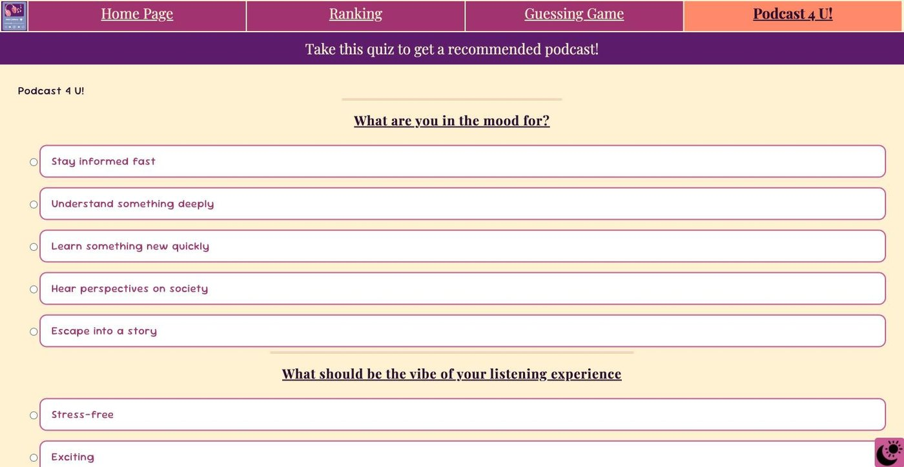
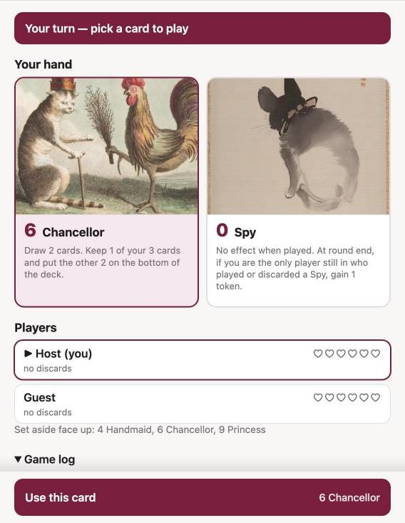
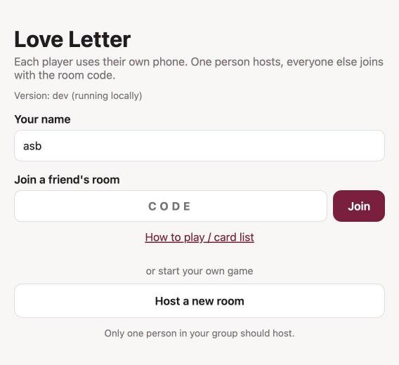
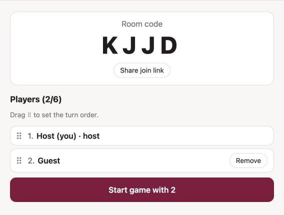
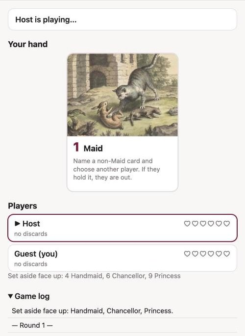

I design better when I know how things get built. Here are two front-end projects:
one written by hand line by line, and one built quickly with AI, where my job was
deciding what to build, testing it, and fixing what didn't work.

jess' listening hub · si 539
Hand-coded · SI 539 final project · Apr 2026
Jess' Listening Hub
A four-page podcast site written from scratch in HTML, CSS, and JavaScript, with no
frameworks. It has a ranked list you can save from, a guessing game, and a quiz
that recommends a podcast.
Guessing game. Press Start and the page shows a random episode title from one of 13 podcasts. You guess which cover it belongs to. Hint narrows the covers down to one genre, and a correct guess shows links to listen on Spotify, Apple Podcasts, and YouTube.
"Podcast 4 U!" quiz. Every answer adds points to one or two listening styles. The quiz adds up the scores and recommends a podcast from the highest one. A few answers act as tie-breakers.
Save-for-later ranking. Checking a podcast adds it to "My List", which is saved in the browser so it's still there when you come back.
Dark mode. It follows the system setting, has a toggle that also works from the keyboard, and remembers your choice. It even swaps the decorative sound-wave images to a light version.
Small touches. A collapsible FAQ, inspiration photos that zoom on hover, and custom icons for the theme toggle.

Home, light mode

Ranking, dark mode

Recommendation quizGuessing game
What the commit history shows
21 commits over twelve days (Apr 11–22) and about 3,500 lines of code. The first
upload had the core pages. Later commits added the guessing game, a full dark theme,
and new favicons. I rewrote the recommendation page and its quiz logic, keeping the
old version as a reference while I rebuilt it. The last few days went to polish:
footer icon colors on every page, file-path fixes, and spacing. I noted
in the code wherever I used AI, which was for two FAQ blurbs and for collecting
episode titles for the game.

love letter · fall 2026
Built with AI · Personal project · Sep 2026
Love Letter, phone to phone
A version of the card game Love Letter for 2–6 friends in the same room. Everyone
plays on their own phone, with no accounts and no server. The host's phone runs
the game and only sends each player the cards they're allowed to see.
Rooms with a 4-letter code. One phone hosts, everyone else joins with the code or a share link. Phones connect directly to each other, and anyone who refreshes rejoins automatically.
A lobby with turn order. The host drags players to set the seating, or uses the arrow keys.
Clear turns. Tap a card, choose a player, then confirm with a "Use this card" bar at the bottom of the screen. Every card effect gets its own popup explaining what happened.
Custom art and card names. Each card has an illustration, and four cards are renamed (Maid, Assassin, Mercenary, Viscount). The game has win and lose screens and small thumbnails of discarded cards.
Built for real phones. It keeps the host's screen awake, and it's set up to stamp each deploy with a version so phones don't mix old files with new ones.

join or host

lobby & turn order

another player's view
Bringing the table to phones
Love Letter is a game of bluffing, guessing, and sudden knockouts. That's easy to
feel across a table, but easy to lose when everyone is looking at their own screen.
User testing showed that players needed to see the big moments happen, not just
read about them in a log. So every card effect gets its own popup that slides in for
everyone: a 🎯 when a Maid guess lands, a 👀 when someone peeks at your hand, a 🛡️
when you're protected.
Animations add the tension and the payoff. When a player is knocked out, their name
crumbles to dust. When the Chancellor is played, cards are dealt in and two slide
back to the bottom of the deck. The winner gets a burst of falling confetti and
hearts. People who have reduced motion turned on in their device settings get the
same information without the movement.
What the commit history shows
Nine commits over two days (Sep 28–29). After the first working version, later
commits fixed and added things: a confusing Maid popup, a layout bug in Firefox,
new popups for the Chancellor, King, and Assassin, a rule change so the Countess
also counts the Chancellor, and edits to the card art. The project has about 70 automated tests
covering every card, players leaving mid-game, and the card layout at phone and
desktop sizes, and they're set up to run before every deploy.
what this adds up to
Skills
html
Semantic and accessible
Skip links, labeled form fields grouped with fieldset and legend, alt text on images, and keyboard support for custom controls like the theme toggle and the game covers.
css
Systems, not one-offs
A two-layer color system (raw colors, then named roles) that makes a full dark theme a few dozen lines. Mobile-first breakpoints, CSS grid and flexbox, and support for reduced-motion settings.
javascript
Interactive features
Data-driven pages built from arrays of podcasts, a weighted scoring quiz, a randomized game with hints, and choices saved in the browser.
testing
Checking it actually works
User testing Love Letter with players, plus automated tests for game rules and layout, cross-browser fixes, and keyboard checks. For more structured research, see the usability rounds in ctrl^shift and The Trevor Project.
design sense
A clear point of view
A playful peach and purple identity for the podcast site, and a quiet, text-first game screen where the card art carries the personality.
working with ai
Directing, then verifying
I use AI to move fast, but I decide what gets built, test it on real devices, and keep fixing until it works. I note in the code where AI helped.